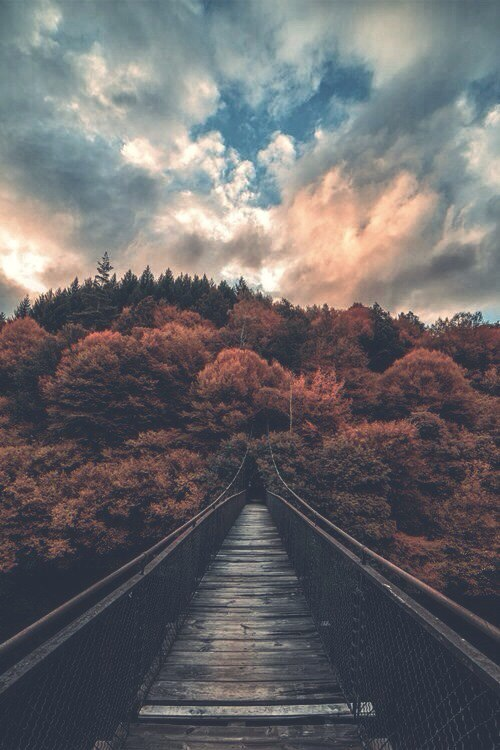
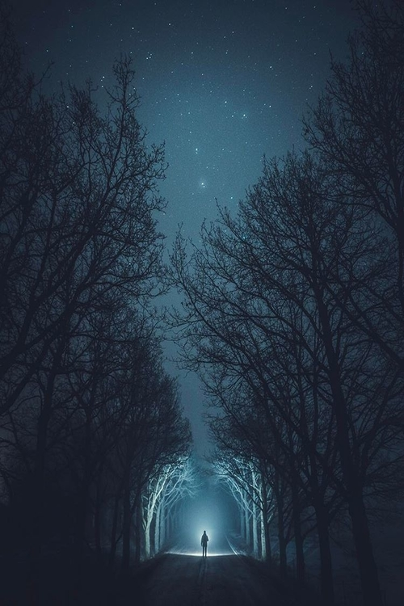

Are you ready to love literature ?

Present your attention...

Believe in miracle.
Волков бояться - в лес не ходить, не бежать,
Не дышать зелёною хвоей,
Не касаться губами воды родниковой,
Не пробовать терпкой смолы на острие ножа.
Волков бояться - себя муровать под бетоном, картоном,
Мусором жалкого оправдания,
Отдавать свою душу городу на заклание,
Не оставив и крошки за пазухой куртки простого фасона.
Что волки тебе? Они были и будут свободными,
В их плошках-глазах луна плещется,
Вот-вот выльется, или мерещится?
Они видят Вселенную в небе, а ты лишь глядишь себе под ноги.
Ты не годен для них и как завтрак, аперитив,
Не соперник, не жертва, тем более, не победитель.
Не в их жёстких лапах таится твоя погибель!
Волчата напьются росы, тебе - не дано, даже шею к земле склонив.
Так стоит ли? Страхом кормить свою смерть, стоит ли?
Если так манит переплетенье ветвей,
Если граница стоит, но ты хочешь знать, что же за ней,
Что тебе волки?
Не они ведь её построили.
Несбывшееся сидит на твоих коленях,
Пахнет грозой и ночными огнями улицы.
Несбывшееся остановит проклятое время -
И даст мне минуту надежды на то, что сбудется.
Несбывшееся дышит ровно, глаза прикрывши
Видит сны, за которые мы заплатили сторицей.
Я дотронусь рукой и мурчанье его услышу,
И сердце мое на мгновение остановится.
Несбывшееся не проснется, а нам - в дорогу.
Нам нужно идти, оторвать от себя надежду,
Ты сбрасываешь его - вцепляется в ногу,
Я пропитываю слезами свою одежду.
Несбывшееся падает на скамейку,
В огромных глазах ледяная тоска поднимается.
Ты за руку прочь уводишь меня по аллейке,
Я бросаю свое Несбывшееся
Не оглядываясь.
Шелест ветра уносит в тихую гавань,
Где нет строгой формы и нет белых саванов,
Где нет боли в сердце и нет в руках холода,
Где можно свободно вдохнуть грудью полной.
В той гавани море любимых улыбок,
Искренних слов и прощенных ошибок.
То море залечит усталое тело
И каждому страху положит пределы.
В соленых волнах клокочет надежда -
Впитается в душу, как влага в одежду,
Веру вернет, и душа успокоится.
Веру в людей - не в святую троицу.
И пусть мои чувства находят нелепыми -
Пусть для них перестала я быть человеком,
Пусть одна я в полете, а не с родными,
Пусть руки заботливые стали крыльями.
Я хочу в твоем шелесте, ветер, увязнуть,
Мне давно назад путь знакомый заказан,
Я за что-то наказана. Из жизни вырвана,
Но тем проще взлететь над пустыми равнинами.
Жди меня, море. На счастье ль, на горе -
Я прилечу и растворюсь в твоей соли.
Новый шанс провален и пропущен,
Судьба устала нам благоволить,
Мы не идем за голосом зовущим,
Мы у стены стоим и продолжаем выть
О нашей безнадежной острой боли,
Что рвет в клочки измученную грудь,
Мы говорим о смерти нашей воли,
А сами продолжаем к смерти льнуть.
Рыдаем мы о том, как жизни смысл
Покинул нас, оставил в темноте,
А сами от огня бежим как крысы,
А сами приковали дух к земле.
Мы ждем, когда придут за нами,
Поставят на ноги, от пыли отряхнут.
Но горизонт пустой и будет пуст годами,
Они не вспомнят. Не заметят. Не спасут.
Послушай, нам пора очнуться, ввысь подняться!
Ведь время не растянется для нас.
Я знаю, просто - страхом укрываться,
Так просто лени и сомнениям поддаться,
Но каждому ведь есть за что сражаться!
Иди. Пора вернуть сюжет в рассказ.
Я - дерево, сожгите мои ветви!
Я подарю вам свет, я вас спасу теплом,
Не вешайте на мне намыленные петли,
Я - жизнь! Я не хочу быть вашим палачом.
Сломайте, разведите в сумерках костры,
Танцуйте в очертаниях оранжевого круга,
Я вам даю добро, так будьте вы добры,
Будьте в этих сумерках терпимее друг к другу!
Я - дерево, от листьев до корней
Принадлежу лишь вам, и это добровольно,
Я вас л ю б л ю, от этого сильней
Горит мое нутро, и это очень больно.
Когда звезда взойдет, утихнет ваша песня,
Рассыплюсь по земле усталою золой...
Вы ведь потом не вспомните костер до поднебесья?
Была я деревом, а стану
Тишиной.
Я стою на краю, но не делаю шаг вперед.
Я смотрю в пустоту словно ровне своей в глаза,
Человек без крыла не способен учуять полет,
Человек без души на ветру - голубая зола.
Я училась подобию мыслей и схожести чувств,
Я свои обращала в камни, кидала на дно.
Пока не открыла, что стих мой - безличен и пуст,
А волчьи клыки не укроет густое руно.
Притворство исчезло, а с ним утонуло все.
Что было, что есть, что будет - теперь не понять,
Но, говорят, кто ищет - не побежден,
И однажды в бескрайней тьме я смогу разглядеть
себя.
Дыши.
Дыши глубоко, словно воздух вот-вот закончится,
Дыши, прижавшись к раме окна переносицей,
За рамой - зима накрывает морозным пологом,
Но сердцем из льда не почувствовать этого холода.
Белое, яркое режет глаза отчаянно,
Кажутся нереальными планы, мечты и чаяния,
В чае топить свои страхи абсолютно бессмысленно,
Зима обернет твое зло неизбежной истиной.
Захочется рвать и метать, чтобы чувствовать жар в своих жилах,
Зверем рычать, ведь только сильные - живы,
Только сильные могут принять сто ударов в спину
И сто ударов отдать с безразличием жесткой пружины.
Кому прилетит пружиной по хрупким костям человечности?
Озлобленные во льдах берегут лишь свои конечности!
Озлобленные не ждут, не милуют, сами не каются,
Они в серости городов даже сами себе не нравятся.
Так дыши и борись, пока слушается твое тело!
Но борись не с другими, а с разумом заиндевелым,
Неси сквозь морозы не зло, а любовь в горсти,
Себя самого отпусти, наконец,
И за все прости.
Так, дорогой.
Все проще на самом деле -
Уходи, когда надоели,
Устои приелись,
Шрамы стянулись на теле.
Я знаю, чего ты хочешь, видно с первого взгляда -
Прочь к эстакадам,
К паромам и звездопадам
Дрожа от нервных разрядов;
Туманится взгляд, поволокой кроются мысли,
Мыслей бесчисленно
И страшно зависнуть в них,
Хочется вырубить все одним выстрелом,
Хочется улыбаться под стать иностранцам,
Не считать станции,
Кеды сменить на сланцы
И каждый рассвет встречать дикими смелыми танцами.
Сладкая жизнь - кажется, так это называется -
Рядом с красавицей
В летнем платьице
Вырасти, жизнь прожить и счастливо состариться;
Но ты смотришь в окно - там бессмысленно серый пейзаж,
Ты сбиваешь всю блажь,
Берешь карандаш,
Реальность легко и удачно рвет твой мираж.
Отчеты, балансы, в обед как всегда что-то пресное,
Делаешь вид, что тебе интересно,
Начальнику лестно,
(Хотя у него свои миражи, если честно)
Забавно, как просто поставить рамки -
Ни камня, ни палки,
Только у плинтуса планки,
Об которые бьешься на каждой дурацкой пьянке.
Дорогой, от меня вовек не дождешься жалости,
Не крой безразличьем отсутствие храбрости,
Сам себе пакостишь,
Скажи, что ты вспомнишь в глубокой ничтожной старости?
Сколько в глазах твоих тогда будет радости?
Остановись, выключи, финал не смотри,
От костра остались одни угли,
Пепел из дому вымели.
Открой окно, с подоконника сбрось цветы,
Подставь шею под руки темноты,
Они ласковы и добры.
Взвой, словами ведь не передать -
Отчего ненавидишь стены, кровать,
Чего ждёшь, когда нечего ждать.
Вой, погромче, потом станет легче,
Просто душно в квартире становится вечером -
Летом градус его покрепче,
Продержись до утра, подожди, потерпи,
Свет позволит на время вылезти из петли,
Ноги снова коснутся живой земли.
И все это - в себе, ведь никто не поймёт.
Потому что в других - холодный расчёт,
Им неведом полёт.
Не грусти, иллюзии - не твоё.
Чуждо соколу, что кричит вороньё,
Они примут мучения за враньё.
...
Солнце встает и снимает дрожь,
Появляются звуки рядом и сплошь,
Город живёт... Ты - живешь?
Вечер тёмен, ласкает прохлада,
Вокруг ходят люди с привкусом моря,
С запахом соли, с летом во взглядах,
Их космос завис в покое.
Уши ловят лишь отзвуки ханга,
Перезвон полусфер заливается в вены.
Я тону, как подводник без акваланга,
В своем сокровенном.
Я тону, я хочу раствориться навеки,
Стать солью, стать нотой под чьей-то ладонью,
Стать не собою, не человеком,
Тенью, тропою,
Любовью -
Не той, что ломает чье-то сознание -
Чистой, безмерной, всепоглощающей.
Жадно вобрав в себя атомы мироздания
Стать светом, надеждой,
Пристанищем...
Я смотрю в глубину чернеющих волн,
В них пеной сверкает отблеск луны.
Сейчас - только море, лето и звон,
И нежный покой темноты.

I think, there is nothing special in me. I was born in a small russian town, I grown up in lovely family (best family in the world, actually), I become a cemical engeneer (not a good decision) and got married (still can't believe he doesn't joking). All my life I wanted to be a writer, don't know why, just felt that it's mine. Now I got lost in reality. But I know, the right words still inside of my heart. Most of my poems in Russian, but I hope, one day I will write in English too. Thanks to my husband, now I have a place to share my life with you.